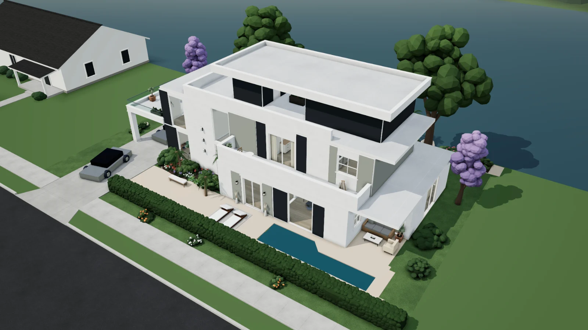

Live 3D, in your browser
Walk into thirty homes.
Each home here is one spec file, built while you watch into walls, rooms, furniture, a garden and light, with a Companion Core waiting on the desk. Pick a home, fly its camera paths, change the hour.
- Homes
- 30
- Builders credited
- 12
- Square metres of floor
- 7,300

Live 3DAll homes
No homes match. Try fewer words, or clear the filters.